Stripe, Mercury and Calendly feel consistent because every cover uses the same frame: same background, same headline spot, same kind of object. Only the subject changes. This locks your covers the same way. Across 1,900 articles the gradient, the headline position, the white card and the round icon badge never move. The headline, the icon and what's drawn inside the card change per article, so no two covers look the same, yet every one reads as Honest Taskers.
| Slot | Set by | Example |
|---|---|---|
| kicker words | Article type | Software & EHR, Cost guide, Compliance, Comparison, Best of 2026… |
| headline | Short version of the title, 3–7 words, max 3 lines | “What a triage VA really costs” |
| badge icon | The subject (specialty or task) | tooth, paw, spine, phone, shield… |
| card contents | One of 10 card types, picked by article type | note, cost, call, masked, versus, ranked, trend, profile, day, tasks, ranges |
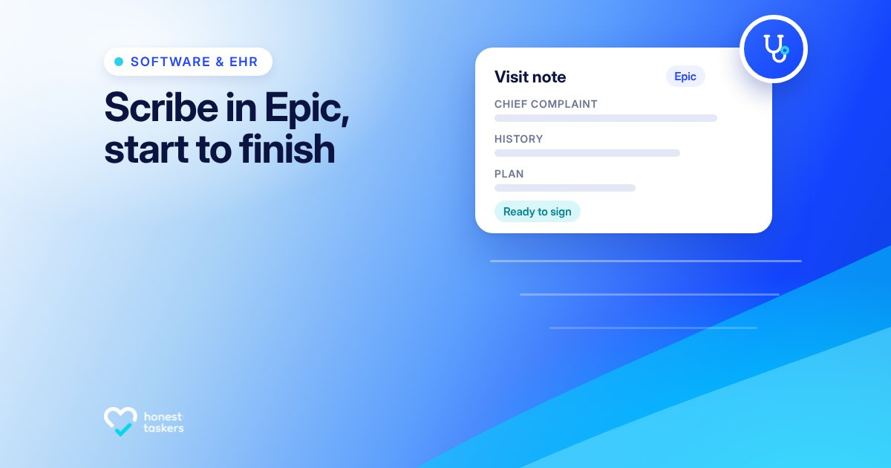
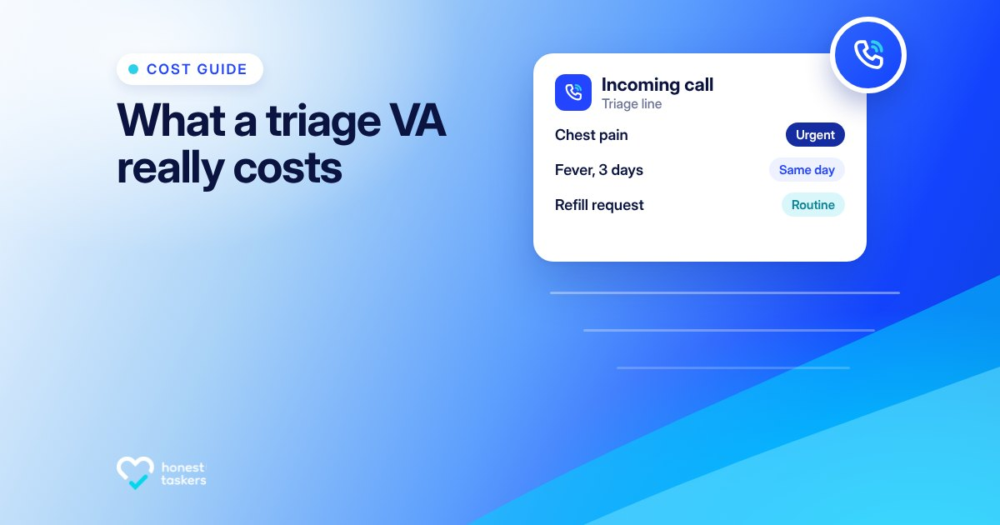
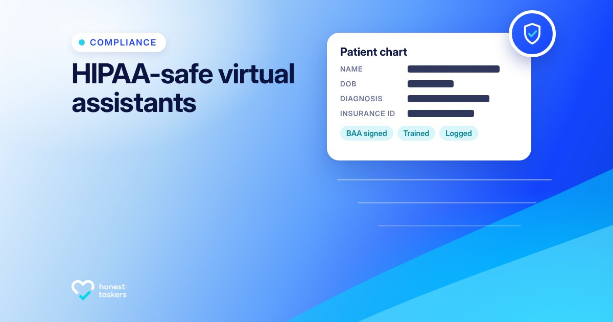
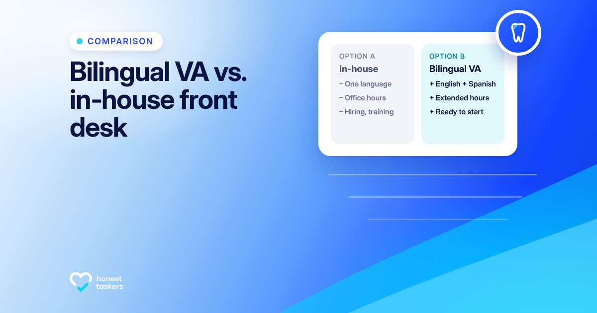
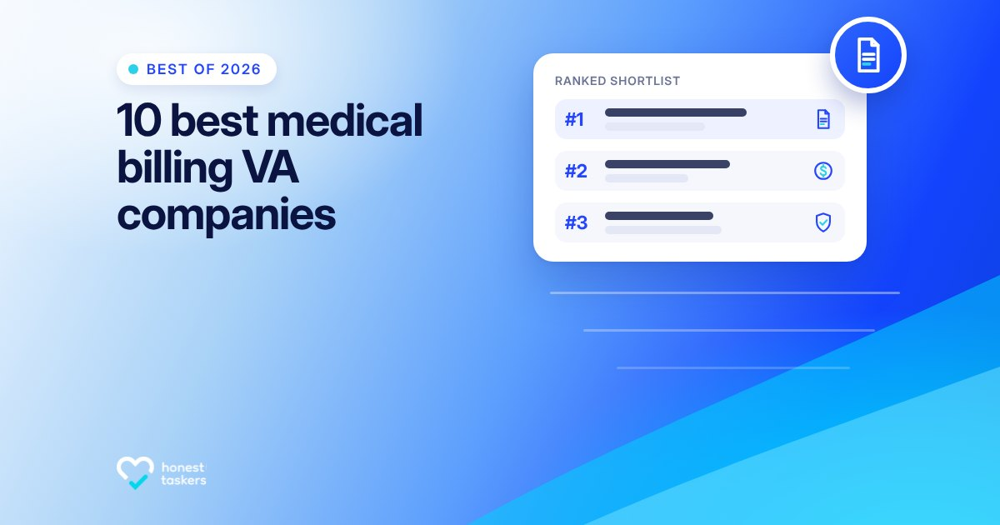
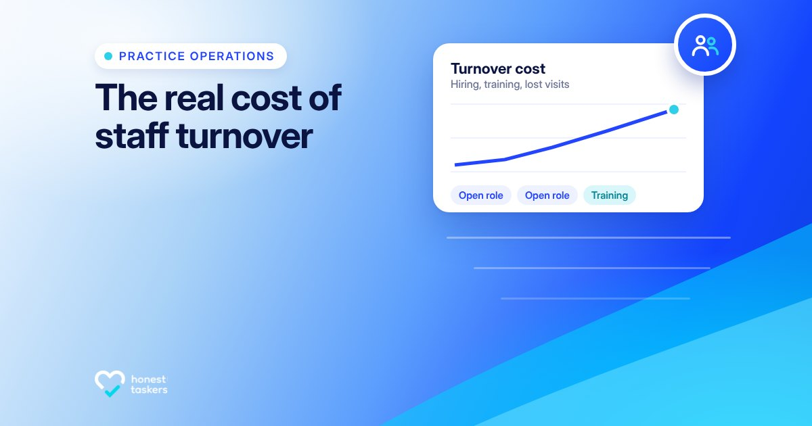
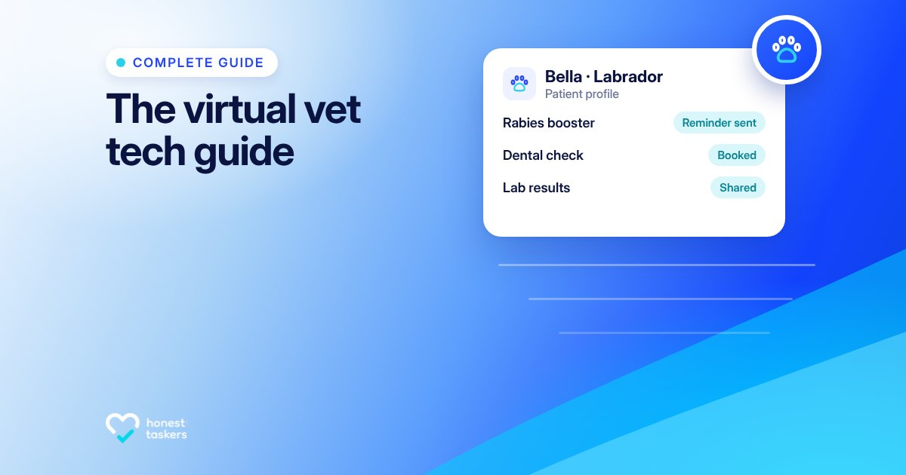
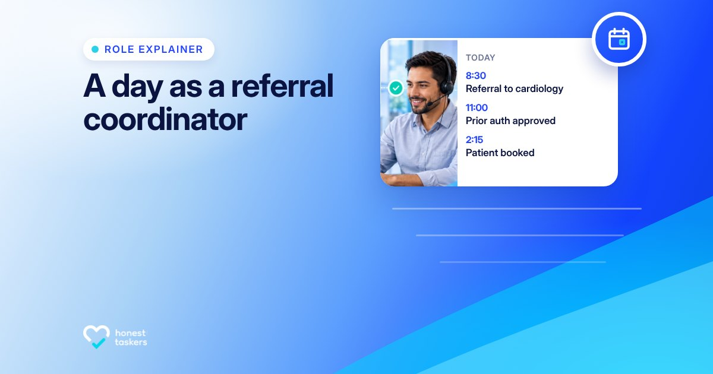
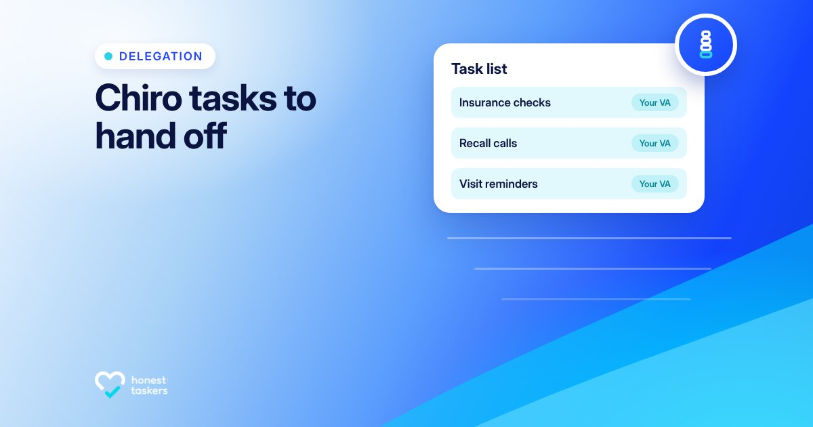
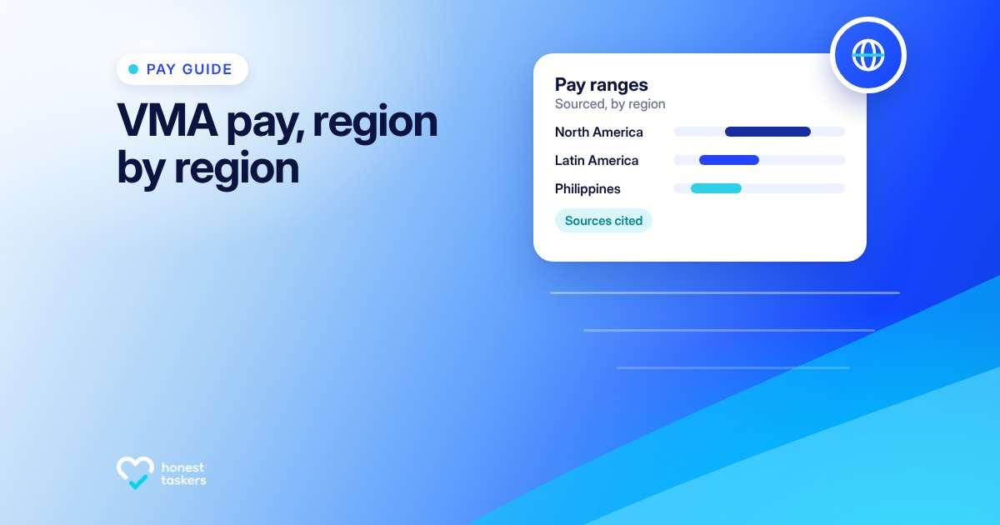
The same 10 covers in a replica of the honesttaskers.com/articles card. The headline and card sit in the part the white panel doesn't cover.
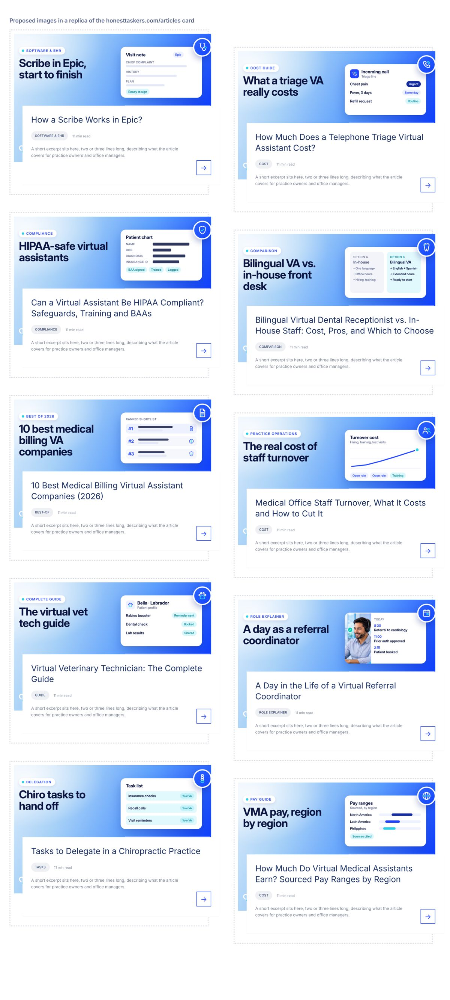
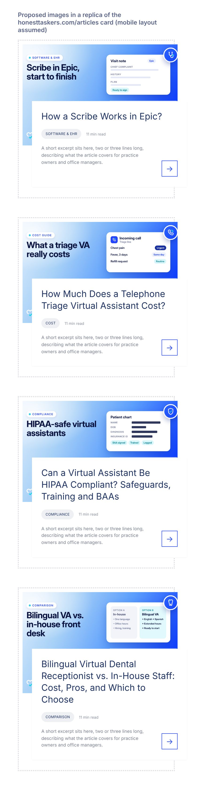
| Card | Use for |
|---|---|
note | Software & EHR, workflows |
cost | Cost and pricing guides (no figures) |
call | Phones, triage, answering, reception |
masked | HIPAA, security, compliance |
versus | X vs Y, in-house vs virtual |
ranked | Best-of and top-N lists |
trend | Operations, turnover, growth, stats |
profile | Complete guides by specialty (pet, patient, practice) |
day | Role explainers, a day in the life (uses a photo) |
tasks | Tasks to delegate, checklists |
ranges | Pay and salary by region (no figures) |
To make a new cover: pick the card for the article type, write a 3–7 word headline, and choose the icon. Everything else is fixed by the template (v6/templates/cover.html). Spec: v6/SERIES.md.